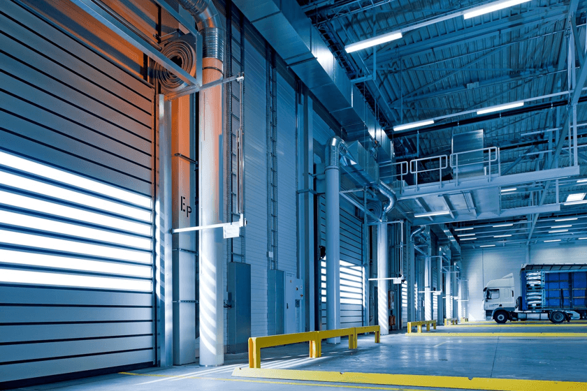

义乌仓
促佳义乌仓库位于义乌市廿三里街道，距离义乌城区、东阳城区、苏溪都是二十三华里，交通便利。义乌仓是促佳最大的一个仓库，仓储面积达12000余平方米，常备普货库存百万件，现有员工400余人，仓库单日最大订单处理量可达80000单。
深圳仓
促佳深圳仓库位于深圳市龙岗区，龙岗区是深圳市东北部的交通枢纽，拥有便捷的交通运输网络。深圳仓是促佳第二个建立的仓库，仓储面积6000余平方米，主要库存3C电子类商品。现有员工120余人，仓库单日最大订单处理量为30000单。

美东仓
2019年设立于新泽西州。仓储面积6000余平方米，现有员工100余人，仓库单日最大订单处理量20000单。
美西仓
加利福尼亚洲位于西岸，面向太平洋，同时也是国际货运中心，2018年加州建仓，辐射美国中西部地区。货物最快3日内送达。仓储面积6000余平方米，现有员工100余人，仓库单日最大订单处理量20000单。

泰国仓
促佳泰国仓于2019年底设立于泰国曼谷。设有两个分仓，一个仓库面积8000余平方米，员工60余人，单日最大订单处理15000单；另一个仓库面积4000余平方米，员工35余人，单日最大订单处理4500单。
印尼仓
促佳印尼仓于2019年底筹划，2020年将正式投入使用。仓库面积9500余平方米，员工65余人，投入使用后单日最大订单处理量将达20000单。